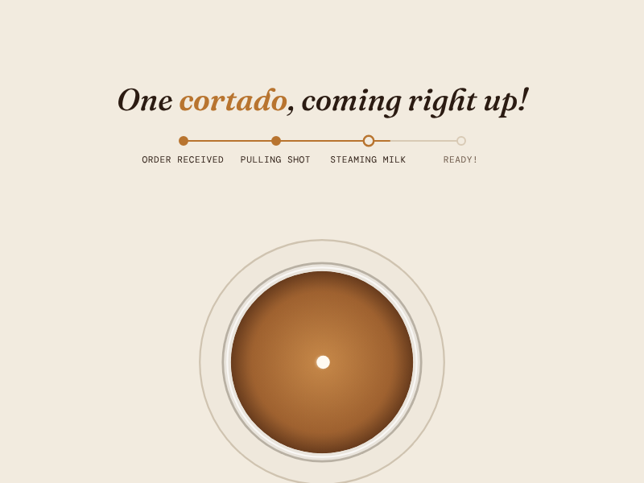
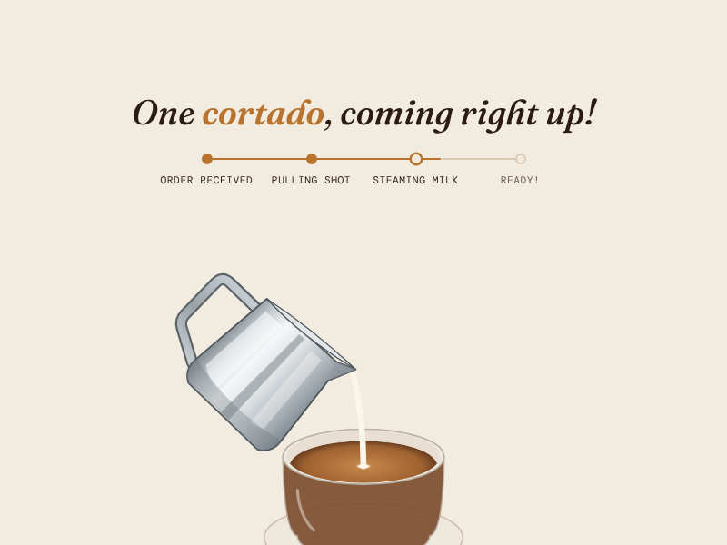
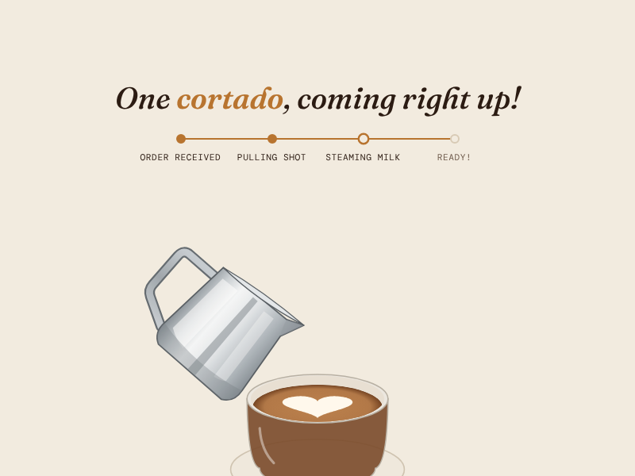
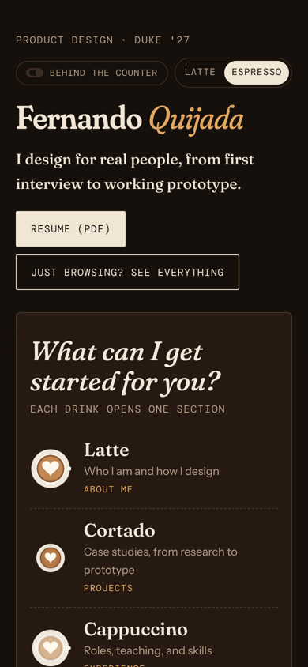

Case study · Personal project · Fall 2026
Designing a portfolio you order like coffee
A portfolio built around the flow I run every shift as a barista: take the order, make it while the customer watches, and call it out when it's ready. I set the direction and made the design calls. Claude wrote the code.

The problem
I needed a portfolio for a graduate application and for job applications, and I had never made one. Two kinds of people would read it:
- The reviewer in a hurry. They skim, often on a phone, and decide in under two minutes whether to read a case study closely. Anything that stands between them and the work costs me.
- The reviewer who remembers. They see dozens of portfolios that look the same. A site with a clear point of view is easier to remember and talk about later.
Those pull in opposite directions. Personality usually means more motion and more clicks, and speed usually means a plain template.
Make a portfolio people remember, without ever making a reviewer wait for the work.
The concept
I'm a barista at BSEISU Coffee, so I already knew a flow that turns a short wait into a good moment: someone orders, watches the drink being made, and hears their name when it's ready. Food ordering apps run on the same loop. So I made the site work that way. Each section is a drink, made to order.
Before deciding on a look, I asked Claude to gather ten portfolios I could react to. I picked two to learn from:
- Henry Heffernan, for play. His site rewards curiosity.
- Brittany Chiang, for readability. Her site gets out of the way of the content.
The rule that came out of that pairing: the coffee layer can delight, but it should never sit between a reviewer and the work.
How it evolved
Six versions. The biggest change was my idea, and it threw out the version before it.
A café-menu sidebar
The first version used Brittany Chiang's layout: a sticky column with my name and links, and the content scrolling beside it, dressed as a café menu. It was readable but felt like a template with a coffee skin.
A pour intro
Next came an intro animation: milk poured into espresso, the latte art spelled "welcome," and the page zoomed into the cup. It was fun once, but it was a gate every visitor had to wait through, and it didn't connect to anything after it.
The drink menu My idea
I proposed turning the whole site into an order. The home page became a chalkboard menu, each section a drink, made to order and handed over with "Your drink is ready!" This replaced the intro. Now the animation only plays when you choose something, so it feels like a response to you instead of a wall. I also added a glass in the corner that empties as you scroll.
Side view or top-down
The brewing started as a top-down view. We built a side-view version too, so I could compare the two running side by side instead of imagining them. I chose the side view, with the camera tilting up and zooming into the latte art in one continuous move.
Polish
Smoother latte art with no popping, a more realistic steel pitcher, and drinks made to real recipes: a cortado is half espresso and half milk, a cappuccino is roughly thirds. Small details, but coffee people notice.
Full case studies
Each project became an order ticket and a case study written from my own reports, photos, and CAD. Later, "Order another" was changed to skip the brewing, since the ritual is for the first order, not every click.


Designing for the reviewer in a hurry
Most of the design work went into making the playful parts optional.
- Labels before puns. Every drink shows the section it opens and what's inside ("Cortado: case studies, from research to prototype"). A first-time visitor shouldn't have to know what a cortado is to find my work.
- "Just browsing? See everything." One tap skips the menu and the animation and shows every section on one page.
- Direct links skip the animation. A link like
#projectsopens straight to the content, so a link I send a recruiter never makes them wait. - Always escapable. A Skip button and the Escape key end the brewing at any point. With reduced motion turned on, the drink is simply served.
- An order tracker. During the brew, a tracker moves through "Order received, Pulling shot, Steaming milk, Ready," like a delivery app's. A wait you can see moving feels shorter than a blank one, and it tells you how long is left.
- Readable in both themes. A light Latte theme and a dark Espresso theme, alt text on every image, and layouts checked on a phone with no sideways scrolling.


Behind the counter. This version of the site adds a toggle that shows short design notes right where each decision lives: why "See everything" exists, why direct links skip the brewing, why the glass empties as you scroll. Reviewers can see the reasoning on the work itself instead of only in this write-up.
How I worked with AI
I built this site with Claude. I didn't write the code. I directed the work: I set the goals and rules, made the design decisions, checked every fact, and pushed back when something didn't fit. Working this way meant I could try ideas as real, clickable prototypes in minutes instead of describing them in a doc.
What I did
- Set the rules up front: plain HTML that runs on GitHub Pages, motion that supports the story, no generic template look, and no overclaiming.
- Picked the references and the coffee concept.
- Came up with the drink menu, which replaced the intro animation.
- Compared both camera angles and chose the side view.
- Wrote and corrected the content: my role on each team, which numbers to show, and which photos to leave out.
- Held the coffee to real recipes.
What Claude did
- Gathered the example portfolios I chose from.
- Wrote all the HTML, CSS, and JavaScript, including the brewing animation, the camera tilt, and the latte art, all drawn in code.
- Drafted case study copy from my reports, memos, and photos for me to edit.
- Built side-by-side versions so I could compare options instead of imagining them.
Where I redirected it
The pour intro was polished, but I dropped it for the menu. Its first case study drafts gave me more credit than I'd earned on team projects, so I cut back the wording until it matched what I actually did. When my notes and my resume disagreed on a number, it stayed off the site until I confirmed it.
What I learned
AI makes the first version cheap, which makes judgment the real work. The fastest progress came from comparing two built options and choosing, not from writing a better prompt.
What's next
- Measure it. I'm adding privacy-friendly analytics (no cookies) to see which drinks people order, which case studies they open, and how often they skip the brewing. If most people skip, the animation gets shorter.
- Test it cold. The bar I'm holding it to: someone who has never seen the site reaches a case study in about 15 seconds without getting annoyed.